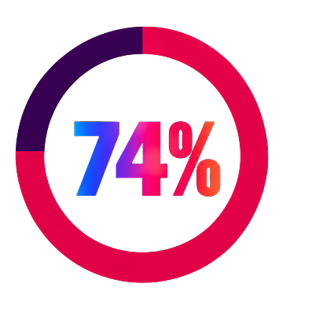

El 74% está de acuerdo en que la IA no debería usarse para clonar o suplantar la identidad de artistas sin autorización
El 26% restante se divide en: Indecisos o neutrales (12%), a favor con matices bajo regulación excepcional como fines educativos o sátira (8%), y a favor del libre uso sin restricciones estrictas (6%).